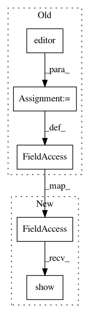

00e20a04533bd58c9074cc19205b5c28adfef2c9,Orange/widgets/unsupervised/owmanifoldlearning.py,OWManifoldLearning,manifold_method_changed,#OWManifoldLearning#,198
Before Change
self.params_box.layout().removeWidget(self.params_widget)
self.params_widget.deleteLater()
editor = self.parameter_editors[self.manifold_method_index]
self.params_widget = editor(self)
self.params_box.layout().addWidget(self.params_widget)
self.apply()
def settings_changed(self):
After Change
def manifold_method_changed(self):
self.params_widget.hide()
self.params_widget = self.parameter_editors[self.manifold_method_index]
self.params_widget.show()
self.apply()
def settings_changed(self):
self.apply()
In pattern: SUPERPATTERN
Frequency: 4
Non-data size: 5
Instances
Project Name: biolab/orange3
Commit Name: 00e20a04533bd58c9074cc19205b5c28adfef2c9
Time: 2016-10-29
Author: janez.demsar@fri.uni-lj.si
File Name: Orange/widgets/unsupervised/owmanifoldlearning.py
Class Name: OWManifoldLearning
Method Name: manifold_method_changed
Project Name: biolab/orange3
Commit Name: 00e20a04533bd58c9074cc19205b5c28adfef2c9
Time: 2016-10-29
Author: janez.demsar@fri.uni-lj.si
File Name: Orange/widgets/unsupervised/owmanifoldlearning.py
Class Name: OWManifoldLearning
Method Name: __init__
Project Name: biolab/orange3
Commit Name: 96ed45619f3cd8ec0997b84c7f48e813a854cca1
Time: 2016-10-28
Author: janez.demsar@fri.uni-lj.si
File Name: Orange/widgets/unsupervised/owmanifoldlearning.py
Class Name: OWManifoldLearning
Method Name: manifold_method_changed
Project Name: biolab/orange3
Commit Name: 96ed45619f3cd8ec0997b84c7f48e813a854cca1
Time: 2016-10-28
Author: janez.demsar@fri.uni-lj.si
File Name: Orange/widgets/unsupervised/owmanifoldlearning.py
Class Name: OWManifoldLearning
Method Name: __init__